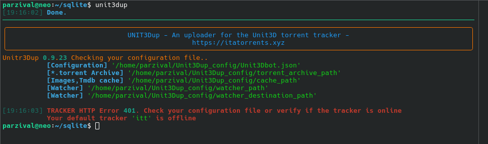

Indice
Installa Unit3dUp su seedbox ultra.cc
Ultra.cc non permette l'uso di Sudo
Il bot richiede python con versione minima 3.10 e max 3.12. python 3.14 risulta essere ancora troppo recente per alcune librerie (12/4/2026)
Utilizziamo pyenv preinstallato su ultra.cc. Unico problema pyenv non installa sqlite3.
Sqlite3 viene utilizzato dal bot come cache per screenshot e ricerche su tracker.
Occorre quindi installare sqlite3 (un paio di comandi) e poi python 3.12
Installare sqlite3
Per installare sqlite3 non possiamo utilizzare sudo quindi dobbiamo compilare
Va in home
cd ~
Scarica il pacchetto con
wget https://sqlite.org/2026/sqlite-autoconf-3510300.tar.gz
Scompatta il pacchetto
tar xvf sqlite-autoconf-3510300.tar.gz
Entra nella cartella che hai ottenuto scompattando il tuo pacchetto
cd sqlite-autoconf-3510300
Lancia questi tre comandi uno dietro l'altro
./configure --prefix=$HOME/sqlite
make
make install
Imposta le variabili ambiente solo per questa sessione
Copia e incolla nel terminale 'ssh'
export PATH=$HOME/sqlite/bin:$PATH
export LDFLAGS="-L$HOME/sqlite/lib"
export CPPFLAGS="-I$HOME/sqlite/include"
export PKG_CONFIG_PATH="$HOME/sqlite/lib/pkgconfig"
export PYTHON_CONFIGURE_OPTS="--enable-loadable-sqlite-extensions"
export LD_LIBRARY_PATH=$HOME/sqlite/lib:$LD_LIBRARY_PATH
Installare python 3.12
Installa
pyenv install -f 3.12.0
Setta python 3.12 come versione di sistema di default
pyenv global 3.12.0
Se hai già installato Unit3Dup, lancia il bot come primo test
Unit3Dup

I messaggi in rosso ti avvertono che non hai ancora configurato il tuo bot Configurazione minima
Se su ultra.cc non esiste pyenv
Lancia nel terminale
curl -fsSL https://pyenv.run | bash
Uso del flag -watcher
Il flag -watcher legge il contenuto di una cartella e lo sposta in una cartella di destinazione, poi carica tutto sul
tracker.
Come usare watcher
Il flag non accetta parametri.
python start.py -watcher
-
watcher_path → configura percorso dove vengono scaricati i file
-
watcher_destination_path → configura percorso dove Unit3Dup sposta i file per caricarli sul tracker
Come configurare il watcher
Apri il file Unit3D.json con un editor di testo e imposta il parametro:
WATCHER_INTERVAL ( in secondi)
Assegna un percorso a piacere per questi due parametri:
watcher_pathwatcher_destination_path
Allo scadere di WATCHER_INTERVAL il bot esegue queste operazioni:
- Controlla la cartella watcher_path
- Sposta tutti i file in watcher_destination_path
- Processa i file e li carica sul tracker